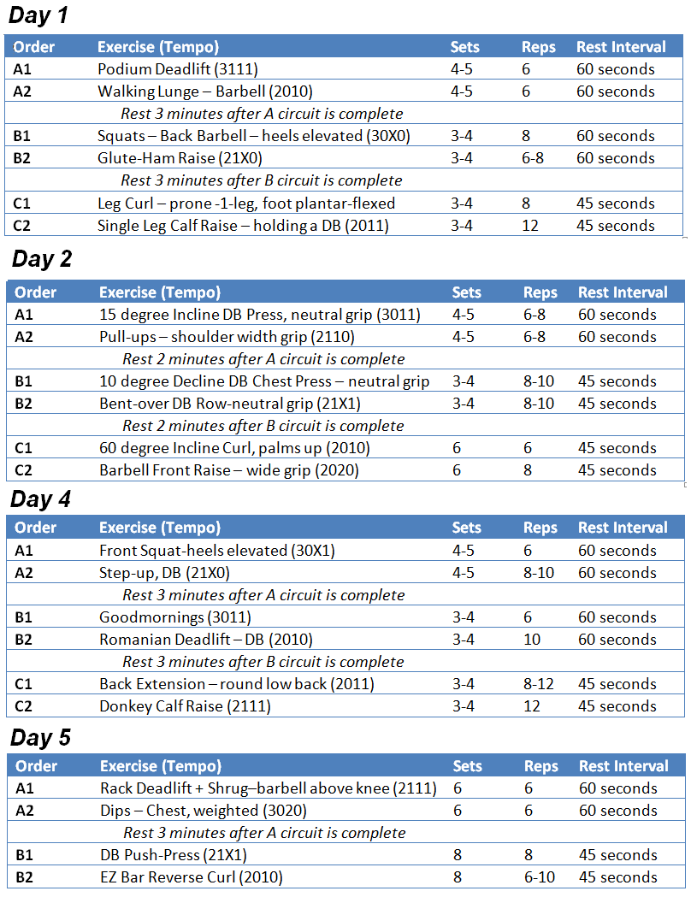

Go back
Mass Building/Bulking Program
To gain muscle, you need to consume more calories than you use. And this will result in some fat gain. Now the amount of fat gain depends on various factors. Think of your body as a car that you have to fill up with gas (food), before you start it. Any unused gas is wasted (stored as fat). How much gas do you put in the tank? Well you can estimate that you'll only be driving to the grocery store, which is 10 miles roundtrip. However you don't know how bad traffic congestion is today. Will you also want to make a stop at the post office? What about a friend's house? Since you do not know the exact distance you will be driving, you will have to estimate and put in a little more just in case. This is the exact same thing you must do for your body. If you just eat blindly, without somewhat knowing what you are eating, then you will either not consume enough food or will consume too much. The first thing to do when planning your bulking diet is to find your daily calorie expenditure. Use the following calculator. Once you have that number, add 800 to it. This new number is what you will aim for each day in terms of total caloric intake. For this article, let's assume our number came out to be 3500. We have our total calorie intake, but it does not help us much if we don't know how to correctly distribute these calories. If we somehow conjure a meal that is 3500 calories and eat this whole meal in the morning, the results would not be pretty. 600 or so would be used for normal functions, while the other 2900 calories would be excreted or stored as fat. This is a huge mistake that many people make. They will go to a restaurant, order a main course that has around 700 calories then get dessert at the end, which adds 500 calories to their meal. While the main course may have all been used to build muscle and function the body, in essence eating the dessert was the same as eating a slice of body fat. Since we are bulking we want to cater our workout to not only size, but strength also. Building strength equals more weight able to be used for workouts, and that means more size gains in the long run. As our cardio will be cut down for the bulking phase, we will be able to spend more time weightlifting. We first start off with a 2-day split, which means we will work our entire body in only 2 days. However we will not only workout 2 times a week, we will workout 4 times a week, meaning our body will be fully worked twice a week. 
Go back